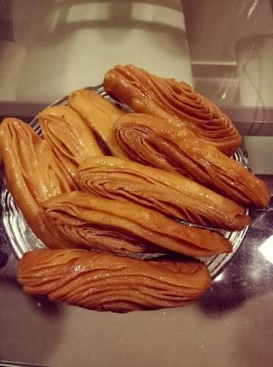

Sukhila Bhog — Lord Jagannath's Favourite
Khaja
ଖଜା / ଫେଣି
"ଫେଣି ଖଜ୍ଜ ସ ଲଡ୍ଡୁ ଚ — ରାଜ ଭୋଗ ଉତ୍ତମ ଉଚ୍ୟତେ"
"Pheni, Khajja, and Laddu — these are called the finest royal offerings."
— Manasollasa (13th-century culinary text), on Khaja
Sold as Sukhila Prasad at the Ananda Bazar within the Jagannath temple, Khaja is a dry, layered, deep-fried wheat pastry glazed with sugar syrup. Part of the 56 Bhog since the 12th century. Traditionally rested on Sal patta leaves so the sugar crystallises into the layers. Lord Jagannath is said to have taught the recipe to a sweet-maker in Puri through a dream.
Ingredients
- 2 cups refined flour (maida)
- 4 tbsp pure cow ghee (for dough)
- A pinch of salt
- Cold water, as needed
- For paste: 2 tbsp ghee + 2 tbsp rice flour
- For syrup: 1½ cups sugar
- 1 cup water
- ½ tsp lemon juice (to prevent crystallisation)
- Ghee or refined oil, for deep frying
Instructions
In a bowl, rub the ghee into the flour until it resembles fine breadcrumbs. Add a pinch of salt. Add cold water gradually and knead into a stiff, firm dough — not soft. Cover and rest for 20 minutes.
Make the layering paste: mix 2 tbsp ghee with 2 tbsp rice flour until smooth. This paste creates the distinct flaky layers.
Divide the dough into 5 equal portions. Roll each into a thin rectangle, roughly the size of a chapati. Keep them as thin as possible.
Spread the ghee-flour paste evenly on one sheet. Place a second sheet on top. Spread paste again. Repeat until all 5 sheets are stacked. Roll the layered stack tightly from one end like a Swiss roll into a long log.
Cut the log into 1-inch pieces. Take each piece, stand it upright (so the layers are visible), and gently roll it out lengthwise into a 5-inch strip. Handle carefully so the layers do not merge.
Heat oil or ghee in a deep pan on medium-low flame. Fry the Khaja strips slowly, turning once, until they turn a deep golden brown and are completely crisp. Drain on paper and cool completely.
Make sugar syrup: combine sugar, water, and lemon juice. Boil until it reaches two-string consistency (when you pull the syrup between thumb and finger, two threads form). Remove from heat.
Dip each cooled Khaja into the warm syrup quickly, coating all sides. Place on a plate or sal leaf to cool. The sugar will crystallise into the layers as it dries. Do not overlap while cooling.